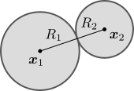
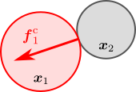
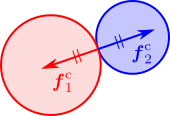
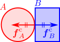
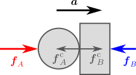
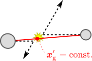
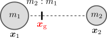
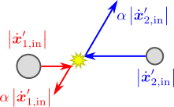

2つのボールが衝突する場合の、各ボールの運動を求めたい。
ボール同士の衝突では、ダランベールの原理と弾性衝突条件を再考する必要がある

右図のように、2つのボールの半径をそれぞれ
𝑅1,𝑅2
、中心座標を
𝒙1,𝒙2
とおく。また、両方のボールの物理量をまとめて大文字で書くことにする。例えば、位置と速度はそれぞれ
𝑿=[𝒙1𝒙2],˙𝑿=[˙𝒙1˙𝒙2]
と書く。知りたいのは、互いに衝突する2つのボールの運動
𝑿𝑡
を計算する方法である。
これまでの議論で扱えないのは、衝突する瞬間のみである。よって新たに知る必要があるのは、前章と同様、「入射速度
˙𝑿in
から反射速度
˙𝑿out
を導く衝突公式」である。今回も、最もよく跳ねかえる極限である弾性衝突を考える。衝突の瞬間以外は、個々のボールに対して第2章で述べたニュートンの運動方程式を使って計算できる。
第4章で考えた「壁とボールの衝突」の場合、弾性衝突公式を導くには、2つの条件：速度変化の方向を決める「ダランベールの原理」（＝拘束力は拘束面に垂直）と、弾性衝突を表す「弾性衝突条件」（＝壁との相対速度の大きさが変化しない）を連立すればよかった。この方法はしかし、今回の問題にはそのままでは使えない。実際、ダランベールの原理は「各ボールについての速度変化の方向」を与えるので、残る未知数は「各ボールの速度変化の大きさ」の2つ。一方、弾性衝突条件は1つだけであり、条件が1つ足りず、
˙𝑿out
の6成分全てを決めることができない。よって、ダランベールの原理を拡張する必要がありそうである。また、弾性衝突条件についても、どのような形で表されるか今の段階では分からない。
以上により、
𝑿𝑡
を求めるには、衝突での速度の変化を与える弾性衝突公式が必要であり、そのためには、ボール同士の衝突における「ダランベールの原理」と「弾性衝突条件」を導く必要がある。これらを踏まえてこの章では、以下の3つの節に分けて考えることにする：6.1ボール同士の衝突におけるダランベールの原理6.2ボール同士の衝突における弾性衝突条件6.3ボールの運動 𝑿𝑡 の計算なお、ボールは球対称なものを考える。（一般の形状の物体の衝突では、物体の回転も変化する。そういった場合については、第10章以降で扱う剛体の理論が必要である。）
6.1ボール同士の衝突におけるダランベールの原理
この節では、ボール同士の弾性衝突におけるダランベールの原理(4)を導く。この式を変形することで、衝突前後の速度に関する条件式(5)が得られる（未知数
Λ
を決めるには、次節の弾性衝突条件が必要である）。
6.1.1拘束条件(1)から拘束力 𝑭c の向きを求めたい
第4章で見たように、ダランベールの原理は、拘束条件
𝐺≥0
から拘束力
𝒇c
の方向を求めるものである。ボール同士の衝突においても、拘束条件
𝐺(𝑿)≥0
を書き下しておこう。これは、
𝒙1,𝒙2
間の距離が
𝑅1+𝑅2
以上：
𝐺(𝑿)≡|𝒙1−𝒙2|−(𝑅1+𝑅2)≥0(1)
とすればよい。
また、2つのボールがあるので、運動方程式は2本になるが、これらもまとめて以下の形になる：
[𝑚100𝑚2]⏟__⏟__⏟𝑀[¨𝒙1¨𝒙2]⏟¨𝑿=[𝒇1𝒇2]⏟𝑭+[𝒇c1𝒇c2]⏟𝑭c∴𝑀¨𝑿=𝑭+𝑭c(2)
𝑭c
は衝突時に働く拘束力、
𝑭
はそれ以外の重力などの力（＝外力）である。（行列
𝑀
のサイズは
6×6
である。）
知りたいのは、ダランベールの原理、即ち
拘束条件𝐺(𝑿)から拘束力𝑭cの向きを求める法則
である。
6.1.2各々のボールに対するダランベールの原理(3)→だが条件が足りない

まず、ボールが1つの場合のダランベールの原理は第4章で既に述べたので、ボール1に適用してみよう。ダランベールの原理によると、ボール1が受ける拘束力
𝒇c1
は、衝突面に垂直（右図）、即ち、拘束条件
𝐺(𝒙1,𝒙2)
を
𝒙1
で偏微分したもの
∇1𝐺
に比例する：
𝒇c1=𝜆1∇1𝐺∇1𝐺≡(𝜕𝐺𝜕𝒙1)T=(𝜕|𝒙1−𝒙2|𝜕𝒙1)T=̂𝒙12
𝜆1
は未定乗数、
̂𝒙12
は
𝒙12≡𝒙1−𝒙2
を正規化したもの。第2式の最後の変形（絶対値の微分）は、第4章の公式【4.3-注1】を使った。
同様に、ボール2についてダランベールの原理を適用すると、未定乗数を
𝜆2
として
𝒇c2=𝜆2∇2𝐺=−𝜆2̂𝒙12
となる。これら
𝒇c1,𝒇c2
をまとめて書くと、以下のようになる：
𝑭c=[𝒇c1𝒇c2]=[𝜆1∇1𝐺𝜆2∇2𝐺]=[𝜆1̂𝒙12−𝜆2̂𝒙12](3)
この式の未知数は
𝜆1,𝜆2
の2つである。しかし、冒頭で述べた通り、未知数が2つあると、弾性衝突条件と連立した時に未知数が残ってしまい、衝突後の速度が一意的に決まらない。従って、これら
𝜆1,𝜆2
に対する関係式が、他にもまだあるはずである。細かいことを言うと、そもそも衝突後の速度が、質量や速度といった既出の変数だけから決定できない可能性もある。その場合はもちろん未知数が残るのが正しい。今は、未知数が残らないことが実験的に知られている、という想定で話を進めている。
6.1.3ボール同士の衝突におけるダランベールの原理：式(4)

2つの未定乗数
𝜆1,𝜆2
の間に条件を課すためには、各ボールに働く拘束力
𝒇c1,𝒇c2
を関係づける新しい法則が必要である。そのような法則として、よく知られているものがある。作用・反作用の法則である。これは、「接触する2つの物体が互いに作用しあう力は、大きさが等しく向きが逆になる」という法則である（以下の【6.1-注1】）。これにより、拘束力は
𝒇c1+𝒇c2=𝟎
を満たすことになる（右図）。従って、式(3)より
𝜆1=𝜆2
とならなければならない。
よって結局、式(3)の拘束力
𝑭c
は、1つの未定乗数
𝜆
を用いて書けることになる：
𝑭c=𝜆[∇1𝐺∇2𝐺]=𝜆∇𝐺∇𝐺≡(𝑑𝐺𝑑𝑿)T(4)
これが、ボール同士の衝突におけるダランベールの原理である。拘束力が、拘束条件の微分
∇𝐺
に比例する形になっているが、これは、ボールが1つだけの場合のダランベールの原理と全く同じ形である。実はこれが一般の拘束条件で成り立つことを、第8章で示す。
ダランベールの原理(4)が得られたので、衝突前後の速度、それぞれ
˙𝑿in,˙𝑿out
に対する関係式の形にしたい。考え方は第4章と同じよである。まず、衝突は一瞬なので、運動方程式(2)において外力
𝑭
の影響は無視できる。そのため、
𝑀˙𝑿
が変化する方向は、拘束力
𝑭c
の方向に一致する。即ち、衝突の前後での速度の関係式は、以下のように書ける：
𝑀˙𝑿out−𝑀˙𝑿in=Λ∇𝐺(=Λ[̂𝒙12−̂𝒙12])(5)
よってあと1つ条件があれば、未知数
Λ
が決まり、衝突後の速度
˙𝑿out
が求まる。その条件とは、弾性衝突条件となるはずである。なお、作用・反作用の法則は、弾性衝突かどうかとは無関係に常に成り立つので、式(5)も弾性衝突でなくても成り立つ（ただし横方向の摩擦力が無視できるとする）。
【6.1-注1】作用・反作用の法則：式(6)

2つの物体
𝐴,𝐵
が互いに接触しているとする（右図）。この時、「
𝐴
が
𝐵
から受ける接触力
𝒇c𝐴
」と「
𝐵
が
𝐴
から受ける接触力
𝒇c𝐵
」は、大きさが同じで向きが逆になる：
𝒇c𝐴+𝒇c𝐵=𝟎(6)
これを作用・反作用の法則という。
補足

作用・反作用の法則により、複合物体の運動方程式から拘束力を消すことができる。例えば右図のように、物体
𝐴,𝐵
が、くっついたままそれぞれ外力
𝒇𝐴,𝒇𝐵
を受けながら運動するとする。この時、
𝐴,𝐵
それぞれの運動方程式：（
𝒂
は共通の加速度）
𝑚𝐴𝒂=𝒇𝐴+𝒇c𝐴𝑚𝐵𝒂=𝒇𝐵+𝒇c𝐵
について辺々和をとると、以下のようになる：
(𝑚𝐴+𝑚𝐵)𝒂=𝒇𝐴+𝒇𝐵+(𝒇c𝐴+𝒇c𝐵)⏟__⏟__⏟=𝟎
作用・反作用の法則(6)により
(⋯)
部分が消えるので、この式は、質量
𝑚𝐴+𝑚𝐵
を持つ1つの物体に、力
𝒇𝐴+𝒇𝐵
がかかっている場合の運動方程式とみなせる。よって、拘束力は、うまいこと消えて考える必要がなくなるのである。もし、作用・反作用の法則が成り立っていないと、物体の運動を考える際、物体の内部でどのような力がかかっているのかを考えなければならず、面倒なことになる。
6.2ボール同士の衝突における弾性衝突条件
この節では、弾性衝突条件(14)を導出する。これと、前節で求めた速度の変化の式(5)を連立すれば、未知数
Λ
が決まり、求めたかった弾性衝突公式(15)が得られる。
6.2.1重心系 𝐾′ から見ると、速度の大きさの変化は等しい：式(10)
弾性衝突は、「最もよく跳ね返る」という状況を表すわけであるが、この時、衝突の前後で「運動の勢い」は変化しないはずである。＝衝突を繰り返すたびに、両方のボールがどんどん加速していったり減速していったりすることはないボールが1つだけの場合であれば、「運動の勢い」とは速度の大きさであるが、2つのボールがある場合、「運動の勢い」とはどのように定量化されるのだろうか。
そのための取っ掛かりとして、2つのボールが同じ質量である場合を考えてみよう。まず、衝突前の速度の大きさが同じで正面衝突する場合：
𝒙1,in=−𝒙2,in(7)
直感的に、「弾性衝突後の速度の大きさは変化しない」というのが弾性衝突条件になると予想できる。次に、式(7)を満たさない場合であるが、この場合であっても、適当な慣性系
𝐾′
の観測者から見ることにより、式(7)が成り立つようにできる。式(7)は各成分3つの条件を課しているが、
𝐾′
の取り方も速度3成分の自由度があるので数があっているよって、弾性衝突条件が求められそうである。ということは、質量が異なる場合であっても、上手く慣性系
𝐾′
を選ぶことによって、弾性衝突条件が得られるのではないだろうか。

そこで着目するのが、「作用・反作用の法則が成り立つ系」に存在する保存則である。即ち、重心
𝒙g
（以下の【6.2-注1】の式(11)）の移動速度
˙𝒙g
：
˙𝒙g≡𝑚1˙𝒙1+𝑚2˙𝒙2𝑚1+𝑚2(8)
が、一定となる（同注の式(12)）：
˙𝒙g=const.(9)
重心速度
˙𝒙g
は衝突の前後で変わらないので、重心とともに等速度で移動する慣性系
𝐾′
（＝重心系）をとることができる。
𝐾′
から見ると、重心位置
𝒙′g
は静止してる（右図）。重力などの外力があると式(9)は成り立たなくなるが、衝突の瞬間の微小時間を考えているので、外力は無視できる。
重心系
𝐾′
から見た重心速度
˙𝒙′g
はゼロを保つ、即ち、衝突の前後での式(8)の値はそれぞれ：（添え字
in
は入射速度、
out
は反射速度を表す）
˙𝒙′g,in≡𝑚1˙𝒙′1,in+𝑚2˙𝒙′2,in𝑚1+𝑚2=𝟎˙𝒙′g,out≡𝑚1˙𝒙′1,out+𝑚2˙𝒙′2,out𝑚1+𝑚2=𝟎
となる。ここから質量
𝑚1,𝑚2
を消して、速度だけの関係式にすると以下のようになる：
∣˙𝒙′1,out∣∣˙𝒙′1,in∣=∣˙𝒙′2,out∣∣˙𝒙′2,in∣≡𝛼(10)
具体的な導出手順：「両式の分母を払う」→「ボール2に対する量を右辺に移項する」→「両辺の絶対値をとって辺々割る」。これにより、重心系
𝐾′
から見れば、衝突による速度の大きさの変化の割合は、両方のボールで等しいことが分かる（ともに
𝛼
倍になる）。
【6.2-注1】重心 𝒙g

2つのボール
𝒙1,𝒙2
の重心
𝒙g
は、右図のように、
𝒙1,𝒙2
間を
𝑚2:𝑚1
に内分する点として定義される：
𝒙g≡𝑚1𝒙1+𝑚2𝒙2𝑚1+𝑚2(11)
もっと粒子数が多い場合にも、容易に拡張できる：
𝒙g≡𝑚1𝒙1+𝑚2𝒙2+⋯𝑚1+𝑚2+⋯
補足
2つの粒子に働く力をそれぞれ
𝒇1,𝒇2
とする。これらが
𝒇1+𝒇2=𝟎
を満たすならば、重心速度
˙𝒙g
は一定となる：
˙𝒙g=const.(12)
【導出】定義式(11)を2階微分して運動方程式
𝑚𝑖¨𝒙𝑖=𝒇𝑖(𝑖=1,2)
を代入するだけである：
¨𝒙g=𝑚1¨𝒙1+𝑚2¨𝒙2𝑚1+𝑚2=𝒇1+𝒇2𝑚1+𝑚2=𝟎
加速度
¨𝒙g
がゼロなので、速度
˙𝒙g
は一定となる。
◼
6.2.2弾性衝突条件：式(14)

さて、上式(10)により、重心系
𝐾′
から見た時、衝突による速度の大きさの変化の比率
𝛼
は、両方のボールで等しい（右図）。よって、この系において、衝突時にあり得る可能性は、「どちらのボールも衝突前より遅くなる／速くなる／変わらない」のいずれかである。弾性衝突に対応するのは、もちろん「運動の勢い」が変化しないもの、即ち、「変わらない」である（
𝛼=1
）。
以上により、重心系
𝐾′
での弾性衝突条件としては、「ボール1の速度の大きさが変わらない」ことを要求すればよい：
∣˙𝒙′1,out∣=∣˙𝒙′1,in∣(13)
（式(10)が成り立つので、どちらか一方のボールについてだけでよい。）これを本来の慣性系に戻せば、弾性衝突条件が得られる：
|˙𝒙1,out−˙𝒙2,out|=|˙𝒙1,in−˙𝒙2,in|(14)
導出の手順：「ガリレイ変換
𝒙′=𝒙−𝑡˙𝒙g
（第5章の【5.1-注2】）の時間微分
˙𝒙′1,𝑗=˙𝒙1,𝑗−˙𝒙g(𝑗=in,out)
を式(13)に代入する」→「重心の定義式(8)を用いて
˙𝒙g
を消去する」。この式(14)が、求めたかった弾性衝突条件である。
弾性衝突条件(14)は、相対速度の大きさが衝突の前後で変化しないことを意味している。これは、動く壁との衝突の場合の弾性衝突条件（第5章の【5.2-注2】）と同じ形になっている。壁は「質量が非常に大きい物体」だとみなせるので、今考えている問題の特殊な場合（＝一方のボールの質量が非常に大きい場合）に対応しているわけである。
6.2.3ボール同士の衝突における弾性衝突公式：式(15)
以上により、「ボール同士の弾性衝突の公式」を得るための条件式がそろった。具体的には、先ほど求めた弾性衝突条件(14)、および、前節で求めたダランベールの原理に対応する式(5)を連立して、未知数
Λ
を求めればよい。実際に計算すると、以下の【6.2-注2】のようになる。
【6.2-注2】ボール同士の弾性衝突の公式
2つのボールが弾性衝突した時、衝突後の速度
˙𝒙1,out,˙𝒙2,out
は、衝突前の速度
˙𝒙1,in,˙𝒙2,in
を用いて、以下のように計算できる：（
̂𝒙12
は
𝒙12=𝒙1,in−𝒙2,in
を正規化したもの）
˙𝒙1,out=˙𝒙1,in+Λ𝑚1̂𝒙12˙𝒙2,out=˙𝒙2,in−Λ𝑚2̂𝒙12Λ≡−2𝑚1𝑚2𝑚1+𝑚2(˙𝒙1,in−˙𝒙2,in)T̂𝒙12⎫{
{
{
{
{⎬{
{
{
{
{⎭(15)
導出の概要
式(15)の上側2式は、式(5)をボールごとに分けて書いたものである。後は、未知数
Λ
を求めればよい。式(5)を式(14)（を辺々2乗したもの）と連立して、
˙𝑿out
を消去すれば、単なる
Λ
の2次方程式となる。2次方程式なので解の候補は2つあるが、第4章の【4.1-注3】と同様に、一方の解は
Λ=0
となる。よって、もう一方の解が正しい解である。この
Λ
を愚直に計算すると、式(15)の第3式が得られる。
◼
6.3ボールの運動 𝑿𝑡 の計算
ボール同士の弾性衝突の公式(15)が得られたので、弾性衝突する2つのボールの運動
𝑿𝑡
を計算することができる。この節では、具体的な計算手法についてまとめた後、いくつかの例について数値計算を行う。
6.3.1 𝑿𝑡 の計算方法
弾性衝突する2つのボールの運動
𝑿𝑡
を数値計算によって求める手順は、弾性衝突公式が変わる以外は前章までと同じである。まず、衝突の瞬間（＝拘束条件
𝐺(𝑿𝑡)=0
が成り立つ時刻
𝑡
）まで、運動方程式
𝑀¨𝑿=𝑭
（
𝑭
は重力などの外力）を用いて計算を進める。その後、衝突点
𝑿
において、弾性衝突公式(15)を使って衝突後の速度
˙𝑿out
を計算する。その後は、その
𝑿,˙𝑿out
を初期値として、再び
𝑀¨𝑿=𝑭
を用いて、次の衝突まで計算をすすめる。以上を繰り返せばよい。
6.3.2【例題1】一方のボールが静止している場合
静止したボールに「様々な質量のボール」を衝突させる場合、数値計算を行うと右図のようになる。。
6.3.3【例題2】重力下での衝突
球の内部で重力を受けて運動する場合、数値計算を行うと右図のようになる。